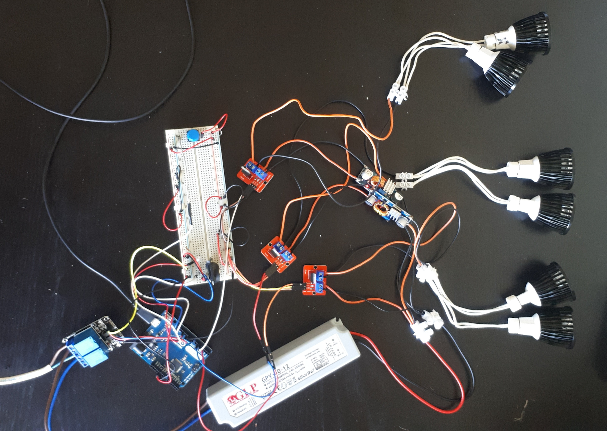

Now that the clock, relay and MOSFET are working, I'm ready to invest my time to make it actually useful. The first order of business is to hook up all of the LEDs, the proper PSU and MOSFETs.

I also added a button which I programmed to turn the lights off.
At this point I decided to write the dimming logic.
Problem: the LEDs don't dim very well at 12V.
Solution: add the blue DC-DC converter modules to lower the LED voltage to 8V.
I decided to add the DC-DC converters to only two sets of the LEDs, because I thought that ramping up 3 sets of LEDs would be excessive. The 3rd set of LEDs will be used at either 100% or 0% as the last step of the ramp-up.
I decided on having 3 settings:
const int current_step = curr_mins - global_state.start_time_minutes;
const int steps_between = global_state.ramp_up_duration_minutes;
const int step_interval = steps_between / 2;
if (current_step < step_interval)
{
turn_low_voltage_light_on((float) current_step / step_interval * 255);
}
else if (current_step >= steps_between)
{
turn_all_lights_on();
}
else if (current_step >= step_interval)
{
turn_low_voltage_light_on(255);
turn_2nd_low_voltage_light_on((float) (current_step - step_interval) / step_interval * 255);
}
Previous part: Testing